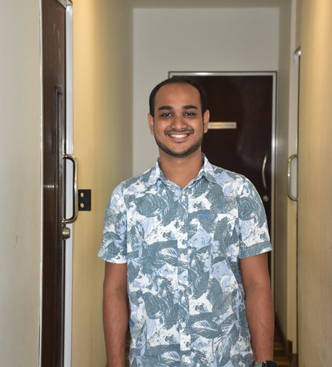

Adaptive Item Retrieval
Smarter image-based matching when items look alike or labels are uncertain.
Research Project 2026
One integrated platform for lost-and-found: it ingests what people report and what cameras and devices show, then turns that into better matches, safer submissions, timely alerts, and early warning when loss risk rises.
Instead of treating lost-and-found as a single search box, the system connects matching, quality checks, venue monitoring, and risk awareness so campuses and similar venues get a clearer end-to-end picture in one place.
Smarter image-based matching when items look alike or labels are uncertain.
Sanity-checks photos, text, and voice together before bad data floods the catalog.
Turns live video into staff-facing cues about unusual movement and unattended objects.
Uses routine device behavior to highlight patterns that often precede a loss.
0.8909
Precision@1
Top-1 retrieval accuracy on the project evaluation set.
90.4%
Validation Accuracy
Submission checks on 500 labeled-style evaluation cases.
0.896
Item Precision
Detection quality for items in the video-analytics track.
0.924
ROC-AUC
Risk-model discrimination on the device-behavior evaluation split.
Section 02
Lost-and-found is still messy in busy public places: fragmented reports, weak media, and little connection between what users say and what the venue already knows. This project reframes that as one system problem rather than four separate tools.
The work packages four capabilities into one product-shaped system: uncertainty-aware retrieval, multimodal validation, live behavior cues from video, and device-side risk signals. Together they support both recovering items and reducing bad data and blind spots before losses harden.
Mission selection screen from the Reclaim web app (lost vs found reporting).
System Demo
The demo walks through the same end-to-end story as the live system: reporting, matching, checks on what people submit, optional risk signals, and how staff see alerts—without diving into each model by name.
Section 03
Why the problem matters, what we set out to prove, and how the pieces fit—at a system level rather than a deep dive per component.
Gap: Typical lost-and-found flows are reactive: plain search, little trust in media, no tie-in to venue video or routine device context—so teams still drown in noise and miss early signals.
Problem: How to ship one coherent system that improves matching and tightens what enters the catalog and gives operators a steadier situational view (submissions + space + devices)?
Direction: A single architecture that routes user and environmental inputs through shared stores and surfaces matches, feedback, alerts, and risk in the same product experience.
Prior work agrees on three themes: retrieval and ranking work better with visual and semantic signals than keywords alone; checking multiple modalities together catches sloppy or misleading reports; and video plus simple temporal logic beats one-off snapshots for “something odd is happening here.” Risk-style signals from how devices are used sit in the same bucket—behavior before the loss is confirmed.
This project does not re-survey every paper on the page; it folds those ideas into the unified system below and reserves quantitative comparisons for the results tables and downloadable reports.
Main objective: Deliver one AI-enabled lost-and-found system that is measurably better at recovery, data quality, venue awareness, and early risk signals than a conventional manual workflow.
Think of it as a loop: people and sensors feed the middle “brain” (retrieval, validation, detection, risk), which reads and writes shared catalogs and logs, and the same loop answers end users (web/mobile), phone/IVR, and staff consoles—so operations see one story, not four disconnected tools.

Quantitative results and per-module evaluation tables are in the research paper and final report—not duplicated here.
Methodologically the build is straightforward: define the shared data plane (items, embeddings, logs, evidence), plug in four AI-backed services that read/write that plane, and expose everything through the same APIs and UI patterns. Evaluation then asks whether the whole behaves well on realistic traces—not whether any single subroutine wins in isolation.
Concrete models and stacks are named in Technologies Used (below) and in the downloadable paper—not repeated here as a second component manual.
Stack map by area—badges are names only; the paper and repo carry install and version detail.
Section 04
Project assessments and academic deliverables throughout the research timeline.
Step 1 of 7. September 2025
A project proposal was presented to evaluate feasibility, scope, and initial implementation direction.
Marks allocated: 6 · Weight: 6%
Step 2 of 7. January 2026
Assessment of literature review outcomes, requirement analysis, and first implementation milestones.
Marks allocated: 6 · Weight: 6%
Step 3 of 7. March 2026
A publication-oriented paper was prepared to document the methodology, experiments, and key findings.
Marks allocated: 10 · Weight: 10%
Step 4 of 7. March 2026
Demonstration of completed models, integration progress, and evaluation results across all components.
Marks allocated: 18 · Weight: 18%
Step 5 of 7. April 2026
Evaluation of project website quality, usability, documentation completeness, and visual presentation.
Marks allocated: 2 · Weight: 2%
Step 6 of 7. May 2026
Final defense covering research contribution, implementation quality, and individual understanding.
Marks allocated: 20 · Weight: 20%
Step 7 of 7. May 2026
Comprehensive final report submission including analysis, validation, results discussion, and conclusions.
Marks allocated: 19 · Weight: 19%
Section 05
What the system is for, in plain language—mirrors the four tracks without re-explaining each model.
Matching that adapts when the system is unsure what it is looking at.
Stops weak or conflicting submissions before they enter the shared catalog.
Gives operators a steadier read on the venue alongside user-submitted reports.
Adds a lightweight “something changed” signal from everyday device use.
Section 06
Access the project documents, reports, presentations, and research materials related to the development and evaluation of the AI-powered Lost and Found system.
Full write-up of the unified system, experiments, and results (PDF via Drive).
Download PaperDirect download from Google Drive — open in Drive if the file does not start downloading.
Initial project scope, team details, and research direction.
Download CharterDirect download from Google Drive — open in Drive if the file does not start downloading.
Research proposal report: problem, objectives, literature review, and proposed methodology.
Download ReportDirect download from Google Drive — open in Drive if the file does not start downloading.
Assessment checklist and progress evaluation materials (checklist 1).
DownloadDirect download from Google Drive — open in Drive if the file does not start downloading.
Section 07
View the presentations used during project evaluations and research progress assessments.
Initial presentation covering the research problem, objectives, and proposed solution.
View SlidesGoogle Slides — preview opens for viewing. Open in editor if you have access.
First progress presentation covering early implementation and component development.
View SlidesGoogle Slides — preview opens for viewing. Open in editor if you have access.
Second progress presentation covering system integration, improvements, and testing.
View SlidesGoogle Slides — preview opens for viewing. Open in editor if you have access.
Section 08
A collaborative research project developed by undergraduate researchers with academic guidance from supervisors and co-supervisors.
Designation: Lecturer
Designation: Lecturer
Faculty of Computing
Sri Lanka Institute of Information Technology
Malabe, Sri Lanka
Role: Component 1 - Uncertainty-Aware Multimodal Item Retrieval
Email: mmweerakoon119@gmail.com
Faculty of Computing
Sri Lanka Institute of Information Technology
Malabe, Sri Lanka
Role: Component 2 - Multimodal Input Validation and Fraud Detection
Faculty of Computing
Sri Lanka Institute of Information Technology
Malabe, Sri Lanka
Role: Component 3 - Device Behavior Anomaly Detection and Lost Item Risk Prediction

Faculty of Computing
Sri Lanka Institute of Information Technology
Malabe, Sri Lanka
Role: Component 4 - Suspicious Behavior Detection Using Video Analytics
Email: kavishavoshan@gmail.com
Section 09
Have questions about our research or interested in collaboration? Reach out to our research team.